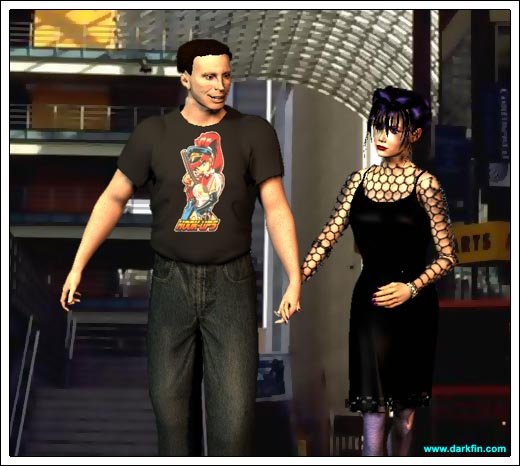

Jeremy (Tagging one of the opponents) Got him, there's only one standing!
Paco HA - HE'S MINE
Byron NOT UNLESS I NAIL HIM, FIRST
Jeremy That was above and beyond!
Paco (Pulling up a chair) Our winning streak... STACKED AND INTACT
Byron (Dancing around) We should be doing this every fucking day, man, this fucking 'burb is so fucking boring!
Byron Whatcha peepin' at Grannie?
Jeremy Give the elders their props, By
Byron (Folding his hands in prayer) Ooh, Saint Jeremy
Paco Hey, a tournament is throwing down here next month, shall we get in on it?
Jeremy How much?
Paco $150 to enter - I figure we each pay $50?
Byron Master Math Man!
Jeremy Can't, that's way out of my range - you'll have to leash up a new hound
Byron AW, DUDE, COME ON
Paco I can spot you for half
Jeremy Thanks, Paco, but I'm already your slave for the movies
Paco (Waving his hand) Nah, don't sweat it - my treat
Jeremy You can't keep bailing me out, bud
Paco Look, I have my motivo ulterioso, Jere
Paco (Bopping him on the arm) SHUT IT, ASSWIPE
Byron (Taunting voice) MAKE ME
Jeremy GUYS, KEEP THIS UP AND THEY'LL BE HAULING US OUT THE DOOR
Byron BRING 'EM
Paco Listen, Colvin, before someone decided to trash the moment with his latent homo fantasies, I was about to say that we seriously need you as our wingman for this tourney... DEAD SERIOUS, that's why I'll stand up for your half and By will tackle the other
Byron REALLY? - and when exactly did I shake on this?
Paco (Kicking him under the table) That's funny, I thought I just heard you
Byron (Sighing) I suppose - what's another $50? - besides a few disco biscuits or some cheap weed
Jeremy Thanks, you two, but I still need to toss it a bit
Paco What exactly do you need to think about? - if we all-time score, we get TWO LARGE... that's $666.00 split between us
Byron 666, man, that's too real!
Jeremy SHIT, I TOTALLY BLANKED
Paco What?
Jeremy (Holding his head) I promised Renfro I'd do a new Satan stencil on his board, I was supposed be there yesterday
Paco So? - just show up there now
Jeremy Can't, he already fled for the weekend - damn, that was going to be extra quick cash in my pocket!
Byron DUDE, WHAT IS WITH CRYING POVERTY ALL THE FUCKING TIME?
Jeremy (Grabbing him by the shirt) Because I AM fucking poor - I don't have my parents' trust fund to thrive off of - I have to WORK... TWO JOBS
Byron THAT'S YOUR FUCKING MOTHER'S DEAL, NOT YOURS
Jeremy YOU MENTION MY MOM AGAIN AND I'LL TOAST YOU
Paco COOL IT, BROS
Byron (Still glaring at Jere) Look, I'm sorry you have a deadbeat dad but his woman and their spawn are NOT YOUR RESPONSIBILITY
Jeremy IF I DON'T STEP UP, WHO WILL?
Byron Why don't you ride Penny the Cash Cow? - she's sure as hell not giving you any other kind of ride
Jeremy FUCK YOU, BY
Paco But he speaks the word
Jeremy I am NOT taking money from my girl - that is SUPER WEAK
Paco NO, dude, it's called "EQUALITY" - see the total look I'm sporting? - I didn't have to purchase a single thing, even the kicks - all offerings from desperate girlies trying to hook up with me
Byron (Slapping Paco on the back) Excellent!
Jeremy I cannot do that
Penny OK, Jere, time to say bye-bye to your loser boys and spend time with me!
Jeremy (Getting up) I ain't turning that down!
Paco Deeply ponder the tournament, Jere, and call me later
Byron And don't forget to PICK UP some new threads while you're here
Penny You have some time before work, don't you?
Jeremy (Looking at his watch) Yeah, about a half hour
Penny (Snuggling against him) Good... what were those two dickheads crying about?
Jeremy Nothing special
Penny Are you entering a tournament?
Jeremy They think so - I'll probably be too busy helping out Grace with some new tracks
Penny Heh, you'd rather spend time with Gracie than me?
Jeremy It's the ONE indentured servitude that I enjoy

Penny (Joking) I thought you LIKED the fuzzy studded collar I gave you?
Jeremy (Smiling) My brother put it on the dog
Penny I bet your mom was thrilled
Jeremy She didn't even notice
Penny So what's up with Byron's fashion advice? - need some new clothes?
Jeremy (Defensive) NO
Penny (Dragging him) C'mon - I'll get you this vintage PiL shirt I saw in...
Jeremy NO, PEN... thank you
Jeremy How's your mom doing?
Penny About the same - although bladder control is becoming an issue
Jeremy Huh, I was going to ask you if you wanted some lemonade?
Penny That's gross, Jere
Jeremy I'm serious, if you want something to eat, I can get it for you - I'm getting paid at the butcher shop tonight
Penny I already had lunch with my dad, thanks
Jeremy Still snooping through his e-mail?
Penny I have to - it's the only way to keep tabs on him... and "Timmy"
Jeremy (Sighing) Don't you ever wish you could trade in our parents?
Penny All the freaking time - but then I start to think... and no, I wouldn't
Jeremy You're right - although I would only keep my mom - my dad definitely needs to drop off the earth... WAIT, HE ALREADY HAS
Penny Still nothing from him?
Jeremy Zilch - he's too busy jumping from one oil rig to the next
Penny (Under her breath) Humans... I wish they would all spontaneously combust sometimes
Jeremy Well, we don't exactly blend in... you can't really fault them
Penny Can't I? - I could care less what they think about me - I just hate it when they stare at my mom when we're out in public
Jeremy They don't know any better - the biggest crisis most of them have to deal with is a hangnail or a clashing sofa pattern
Penny I think she reminds them of their own mortality and they don't have the spine to deal
Jeremy Not everyone is blessed with a spine of steel like yours
Penny (Rubbing his arm) You appreciate my spine of steel?
Jeremy I think it's sexy as hell - and I'm pretty sure there's a fetish group out there who would agree with me
Jeremy After work, you want to meet me at the cemetery later?
Penny (Hesitant) I can't... I have this project I'm working on
Jeremy (Shocked) For school?
Penny No, not really
Jeremy What's it for?
Penny I can't really say yet - but when it's ready, you'll be so surprised!
Jeremy (Suspicious) Surprises are not really my thing
Penny I think you'll like this one
Jeremy (Stopping her) Does it have anything to do with why that pig ass Brad keeps following you around?
Jeremy IT DOES
Penny Do you trust me, Jere?
Penny DO YOU?
Jeremy Yeah
Penny GOOD - because if everything goes according to plan, it will be the answer to all of our prayers!
Jeremy (Under his breath) Prayers or spells?